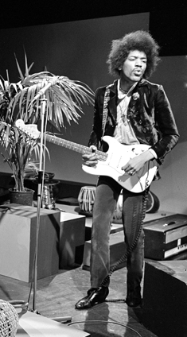
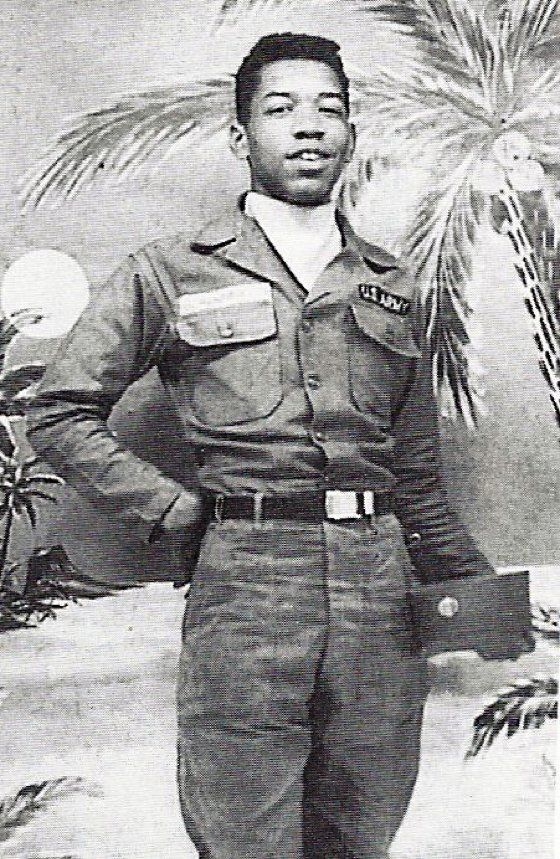

 James Marshall "Jimi" Hendrix (born Johnny Allen Hendrix; November 27, 1942 – September 18, 1970) was an American guitarist, singer, and songwriter. Although his mainstream career spanned only four years, he is widely regarded as one of the most influential electric guitarists in the history of popular music, and one of the most celebrated musicians of the 20th century. The Rock and Roll Hall of Fame describes him as "arguably the greatest instrumentalist in the history of rock music". Born in Seattle, Washington, Hendrix began playing guitar at the age of 15. In 1961, he enlisted in the US Army, but was discharged the following year. Soon afterward, he moved to Clarksville then Nashville, Tennessee, and began playing gigs on the chitlin' circuit, earning a place in the Isley Brothers' backing band and later with Little Richard, with whom he continued to work through mid-1965. He then played with Curtis Knight and the Squires before moving to England in late 1966 after bassist Chas Chandler of the Animals became his manager. Within months, Hendrix had earned three UK top ten hits with the Jimi Hendrix Experience: "Hey Joe", "Purple Haze", and "The Wind Cries Mary". He achieved fame in the US after his performance at the Monterey Pop Festival in 1967, and in 1968 his third and final studio album, Electric Ladyland, reached number one in the US. The double LP was Hendrix's most commercially successful release and his first and only number one album. The world's highest-paid performer, he headlined the Woodstock Festival in 1969 and the Isle of Wight Festival in 1970 before his accidental death in London from barbiturate-related asphyxia on September 18, 1970. Hendrix was inspired by American rock and roll and electric blues. He favored overdriven amplifiers with high volume and gain, and was instrumental in popularizing the previously undesirable sounds caused by guitar amplifier feedback. He was also one of the first guitarists to make extensive use of tone-altering effects units in mainstream rock, such as fuzz distortion, Octavia, wah-wah, and Uni-Vibe. He was the first musician to use stereophonic phasing effects in recordings. Holly George-Warren of Rolling Stone commented: "Hendrix pioneered the use of the instrument as an electronic sound source. Players before him had experimented with feedback and distortion, but Hendrix turned those effects and others into a controlled, fluid vocabulary every bit as personal as the blues with which he began." Hendrix was the recipient of several music awards during his lifetime and posthumously. In 1967, readers of Melody Maker voted him the Pop Musician of the Year and in 1968, Billboard named him the Artist of the Year and Rolling Stone declared him the Performer of the Year. Disc and Music Echo honored him with the World Top Musician of 1969 and in 1970, Guitar Player named him the Rock Guitarist of the Year. The Jimi Hendrix Experience was inducted into the Rock and Roll Hall of Fame in 1992 and the UK Music Hall of Fame in 2005. Rolling Stone ranked the band's three studio albums, Are You Experienced, Axis: Bold as Love, and Electric Ladyland, among the 100 greatest albums of all time, and they ranked Hendrix as the greatest guitarist and the sixth greatest artist of all time.
Hendrix had African American and Irish ancestry. His paternal grandfather, Bertran Philander Ross Hendrix, was born in 1866 out of an extramarital affair between a woman named Fanny and a grain merchant from Urbana, Ohio, or Illinois, one of the wealthiest men in the area at that time. Hendrix's paternal grandmother, Zenora "Nora" Rose Moore, was a former dancer and vaudeville performer. Hendrix and Moore relocated to Vancouver, where they had a son they named James Allen Hendrix on June 10, 1919; the family called him "Al".
In 1941, after moving to Seattle, Al met Lucille Jeter (1925–1958) at a dance; they married on March 31, 1942. Lucille's father (Jimi's maternal grandfather) was Preston Jeter (born 1875), whose mother was born in similar circumstances as Bertran Philander Ross Hendrix. Lucille's mother, née Clarice Lawson, had African American ancestors who had been enslaved people.
Al, who had been drafted by the US Army to serve in World War II, left to begin his basic training three days after the wedding. Johnny Allen Hendrix was born on November 27, 1942, in Seattle; he was the first of Lucille's five children. In 1946, Johnny's parents changed his name to James Marshall Hendrix, in honor of Al and his late brother Leon Marshall.
Stationed in Alabama at the time of Hendrix's birth, Al was denied the standard military furlough afforded servicemen for childbirth; his commanding officer placed him in the stockade to prevent him from going AWOL to see his infant son in Seattle. He spent two months locked up without trial, and while in the stockade received a telegram announcing his son's birth. During Al's three-year absence, Lucille struggled to raise their son. When Al was away, Hendrix was mostly cared for by family members and friends, especially Lucille's sister Delores Hall and her friend Dorothy Harding. Al received an honorable discharge from the US Army on September 1, 1945.
Two months later, unable to find Lucille, Al went to the Berkeley, California, home of a family friend named Mrs. Champ, who had taken care of and had attempted to adopt Hendrix; this is where Al saw his son for the first time.
After returning from service, Al reunited with Lucille, but his inability to find steady work left the family impoverished. They both struggled with alcohol, and often fought when intoxicated. The violence sometimes drove Hendrix to withdraw and hide in a closet in their home. His relationship with his brother Leon (born 1948) was close but precarious; with Leon in and out of foster care, they lived with an almost constant threat of fraternal separation. In addition to Leon, Hendrix had three younger siblings: Joseph, born in 1949, Kathy in 1950, and Pamela, 1951, all of whom Al and Lucille gave up to foster care and adoption. The family frequently moved, staying in cheap hotels and apartments around Seattle. On occasion, family members would take Hendrix to Vancouver to stay at his grandmother's. A shy and sensitive boy, he was deeply affected by his life experiences. In later years, he confided to a girlfriend that he had been the victim of sexual abuse by a man in uniform. On December 17, 1951, when Hendrix was nine years old, his parents divorced; the court granted Al custody of him and Leon.

Before Hendrix was 19 years old, law authorities had twice caught him riding in stolen cars. Given a choice between prison or joining the Army, he chose the latter and enlisted on May 31, 1961. After completing eight weeks of basic training at Fort Ord, California, he was assigned to the 101st Airborne Division and stationed at Fort Campbell, Kentucky. He arrived on November 8, and soon afterward he wrote to his father: "There's nothing but physical training and harassment here for two weeks, then when you go to jump school ... you get hell. They work you to death, fussing and fighting." In his next letter home, Hendrix, who had left his guitar in Seattle at the home of his girlfriend Betty Jean Morgan, asked his father to send it to him as soon as possible, stating: "I really need it now." His father obliged and sent the red Silvertone Danelectro on which Hendrix had hand-painted the words "Betty Jean" to Fort Campbell. His apparent obsession with the instrument contributed to his neglect of his duties, which led to taunting and physical abuse from his peers, who at least once hid the guitar from him until he had begged for its return. In November 1961, fellow serviceman Billy Cox walked past an army club and heard Hendrix playing.
Impressed by Hendrix's technique, which Cox described as a combination of "John Lee Hooker and Beethoven", Cox borrowed a bass guitar and the two jammed. Within weeks, they began performing at base clubs on the weekends with other musicians in a loosely organized band, the Casuals.
Hendrix completed his paratrooper training and, on January 11, 1962, Major General C. W. G. Rich awarded him the prestigious Screaming Eagles patch. By February, his personal conduct had begun to draw criticism from his superiors. They labeled him an unqualified marksman and often caught him napping while on duty and failing to report for bed checks. On May 24, Hendrix's platoon sergeant, James C. Spears, filed a report in which he stated: "He has no interest whatsoever in the Army ... It is my opinion that Private Hendrix will never come up to the standards required of a soldier. I feel that the military service will benefit if he is discharged as soon as possible." On June 29, 1962, Hendrix was granted a general discharge under honorable conditions. Hendrix later spoke of his dislike of the army and that he had received a medical discharge after breaking his ankle during his 26th parachute jump. However, no Army records have been produced that indicate that he received or was discharged for any injuries.
 Details are disputed concerning Hendrix's last day and death. He spent much of September 17, 1970, with Monika Dannemann in London, the only witness to his final hours. Dannemann said that she prepared a meal for them at her apartment in the Samarkand Hotel around 11 p.m., when they shared a bottle of wine. She drove him to the residence of an acquaintance at approximately 1:45 a.m., where he remained for about an hour before she picked him up and drove them back to her flat at 3 a.m. She said that they talked until around 7 a.m., when they went to sleep. Dannemann awoke around 11 a.m. and found Hendrix breathing but unconscious and unresponsive. She called for an ambulance at 11:18 a.m., and it arrived nine minutes later. Paramedics transported Hendrix to St Mary Abbots Hospital where Dr. John Bannister pronounced him dead at 12:45 p.m. on September 18.
Coroner Gavin Thurston ordered a post-mortem examination which was performed on September 21 by Professor Robert Donald Teare, a forensic pathologist. Thurston completed the inquest on September 28 and concluded that Hendrix aspirated his own vomit and died of asphyxia while intoxicated with barbiturates. Citing "insufficient evidence of the circumstances", he declared an open verdict. Dannemann later revealed that Hendrix had taken nine of her prescribed Vesparax sleeping tablets, 18 times the recommended dosage.
Desmond Henley embalmed Hendrix's body which was flown to Seattle on September 29. Hendrix's family and friends held a service at Dunlap Baptist Church in Seattle's Rainier Valley on Thursday, October 1; his body was interred at Greenwood Cemetery in nearby Renton, the location of his mother's grave. Family and friends traveled in 24 limousines, and more than 200 people attended the funeral, including Mitch Mitchell, Noel Redding, Miles Davis, John Hammond, and Johnny Winter.
Hendrix is often cited as one example of an allegedly disproportionate number of musicians dying at age 27, including Brian Jones, Jim Morrison, and Janis Joplin in the same era, a phenomenon referred to as the 27 Club.
Details are disputed concerning Hendrix's last day and death. He spent much of September 17, 1970, with Monika Dannemann in London, the only witness to his final hours. Dannemann said that she prepared a meal for them at her apartment in the Samarkand Hotel around 11 p.m., when they shared a bottle of wine. She drove him to the residence of an acquaintance at approximately 1:45 a.m., where he remained for about an hour before she picked him up and drove them back to her flat at 3 a.m. She said that they talked until around 7 a.m., when they went to sleep. Dannemann awoke around 11 a.m. and found Hendrix breathing but unconscious and unresponsive. She called for an ambulance at 11:18 a.m., and it arrived nine minutes later. Paramedics transported Hendrix to St Mary Abbots Hospital where Dr. John Bannister pronounced him dead at 12:45 p.m. on September 18.
Coroner Gavin Thurston ordered a post-mortem examination which was performed on September 21 by Professor Robert Donald Teare, a forensic pathologist. Thurston completed the inquest on September 28 and concluded that Hendrix aspirated his own vomit and died of asphyxia while intoxicated with barbiturates. Citing "insufficient evidence of the circumstances", he declared an open verdict. Dannemann later revealed that Hendrix had taken nine of her prescribed Vesparax sleeping tablets, 18 times the recommended dosage.
Desmond Henley embalmed Hendrix's body which was flown to Seattle on September 29. Hendrix's family and friends held a service at Dunlap Baptist Church in Seattle's Rainier Valley on Thursday, October 1; his body was interred at Greenwood Cemetery in nearby Renton, the location of his mother's grave. Family and friends traveled in 24 limousines, and more than 200 people attended the funeral, including Mitch Mitchell, Noel Redding, Miles Davis, John Hammond, and Johnny Winter.
Hendrix is often cited as one example of an allegedly disproportionate number of musicians dying at age 27, including Brian Jones, Jim Morrison, and Janis Joplin in the same era, a phenomenon referred to as the 27 Club.
Guitars
Hendrix played a variety of guitars, but was most associated with the Fender Stratocaster. He acquired his first in 1966, when a girlfriend loaned him enough money to purchase a used Stratocaster built around 1964. He used it often during performances and recordings. In 1967, he described the Stratocaster as "the best all-around guitar for the stuff we're doing"; he praised its "bright treble and deep bass".
Hendrix mainly played right-handed guitars that were turned upside down and restrung for left-hand playing. Because of the slant of the Stratocaster's bridge pickup, his lowest string had a brighter sound, while his highest string had a darker sound, the opposite of the intended design. Hendrix also used Fender Jazzmasters, Duosonics, two different Gibson Flying Vs, a Gibson Les Paul, three Gibson SGs, a Gretsch Corvette, and a Fender Jaguar. He used a white Gibson SG Custom for his performances on The Dick Cavett Show in September 1969, and a black Gibson Flying V during the Isle of Wight festival in 1970.
Amplifiers
During 1965 and 1966, while Hendrix was playing back-up for soul and R&B acts in the US, he used an 85-watt Fender Twin Reverb amplifier. When Chandler brought Hendrix to England in October 1966, he supplied him with 30-watt Burns amps, which Hendrix thought were too small for his needs. After an early London gig when he was unable to use his Fender Twin, he asked about the Marshall amps he had noticed other groups using. Years earlier, Mitch Mitchell had taken drum lessons from Marshall founder Jim Marshall, and he introduced Hendrix to Marshall. At their initial meeting, Hendrix bought four speaker cabinets and three 100-watt Super Lead amplifiers; he grew accustomed to using all three in unison. The equipment arrived on October 11, 1966, and the Experience used it during their first tour.
Marshall amps were important to the development of Hendrix's overdriven sound and his use of feedback, creating what author Paul Trynka described as a "definitive vocabulary for rock guitar". Hendrix usually turned all the control knobs to the maximum level, which became known as the Hendrix setting. During the four years prior to his death, he purchased between 50 and 100 Marshall amplifiers. Jim Marshall said Hendrix was "the greatest ambassador" his company ever had.
Effects
One of Hendrix's signature effects was the wah-wah pedal, which he first heard used with an electric guitar in Cream's "Tales of Brave Ulysses", released in May 1967. That July, while performing at the Scene club in New York City, Hendrix met Frank Zappa, whose band the Mothers of Invention were performing at the adjacent Garrick Theater. Hendrix was fascinated by Zappa's application of the pedal, and he experimented with one later that evening. He used a wah pedal during the opening to "Voodoo Child (Slight Return)", creating one of the best-known wah-wah riffs of the classic rock era. He also uses the effect on "Up from the Skies", "Little Miss Lover", and "Still Raining, Still Dreaming".
Hendrix used a Dallas Arbiter Fuzz Face and a Vox wah pedal during recording sessions and performances, but also experimented with other guitar effects. He enjoyed a fruitful long-term collaboration with electronics enthusiast Roger Mayer, whom he once called "the secret" of his sound. Mayer introduced him to the Octavia, an octave-doubling effect pedal, in December 1966, and he first recorded with it during the guitar solo to "Purple Haze".
Hendrix also used the Uni-Vibe, designed to simulate the modulation effects of a rotating Leslie speaker. He uses the effect during his performance at Woodstock and on the Band of Gypsys track "Machine Gun", which prominently features the Uni-vibe along with an Octavia and a Fuzz Face. For performances, he plugged his guitar into the wah-wah, which was connected to the Fuzz Face, then the Uni-Vibe, and finally a Marshall amplifier.
 The Rock and Roll Hall of Fame biography for the Experience states: "Jimi Hendrix was arguably the greatest instrumentalist in the history of rock music. Hendrix expanded the range and vocabulary of the electric guitar into areas no musician had ever ventured before. His boundless drive, technical ability and creative application of such effects as wah-wah and distortion forever transformed the sound of rock and roll." Musicologist Andy Aledort described Hendrix as "one of the most creative" and "influential musicians that has ever lived". Music journalist Chuck Philips wrote: "In a field almost exclusively populated by white musicians, Hendrix has served as a role model for a cadre of young black rockers. His achievement was to reclaim title to a musical form pioneered by black innovators like Little Richard and Chuck Berry in the 1950s."
The Rock and Roll Hall of Fame biography for the Experience states: "Jimi Hendrix was arguably the greatest instrumentalist in the history of rock music. Hendrix expanded the range and vocabulary of the electric guitar into areas no musician had ever ventured before. His boundless drive, technical ability and creative application of such effects as wah-wah and distortion forever transformed the sound of rock and roll." Musicologist Andy Aledort described Hendrix as "one of the most creative" and "influential musicians that has ever lived". Music journalist Chuck Philips wrote: "In a field almost exclusively populated by white musicians, Hendrix has served as a role model for a cadre of young black rockers. His achievement was to reclaim title to a musical form pioneered by black innovators like Little Richard and Chuck Berry in the 1950s."
Hendrix favored overdriven amplifiers with high volume and gain.He was instrumental in developing the previously undesirable technique of guitar amplifier feedback, and helped to popularize use of the wah-wah pedal in mainstream rock. He rejected the standard barre chord fretting technique used by most guitarists in favor of fretting the low 6th string root notes with his thumb. He applied this technique during the beginning bars of "Little Wing", which allowed him to sustain the root note of chords while also playing melody. This method has been described as piano style, with the thumb playing what a pianist's left hand would play and the other fingers playing melody as a right hand. Having spent several years fronting a trio, he developed an ability to play rhythm chords and lead lines together, giving the audio impression that more than one guitarist was performing. He was the first artist to incorporate stereophonic phasing effects in rock music recordings. Holly George-Warren of Rolling Stone wrote: "Hendrix pioneered the use of the instrument as an electronic sound source. Players before him had experimented with feedback and distortion, but Hendrix turned those effects and others into a controlled, fluid vocabulary every bit as personal as the blues with which he began."
While creating his unique musical voice and guitar style, Hendrix synthesized diverse genres, including blues, R&B, soul, British rock, American folk music, 1950s rock and roll, and jazz. Musicologist David Moskowitz emphasized the importance of blues music in Hendrix's playing style, and according to authors Steven Roby and Brad Schreiber, "[He] explored the outer reaches of psychedelic rock". His influence is evident in a variety of popular music formats, and he has contributed significantly to the development of hard rock, heavy metal, funk, post-punk, grunge, and hip hop music. His lasting influence on modern guitar players is difficult to overstate; his techniques and delivery have been abundantly imitated by others. Despite his hectic touring schedule and notorious perfectionism, he was a prolific recording artist who left behind numerous unreleased recordings. More than 40 years after his death, Hendrix remains as popular as ever, with annual album sales exceeding that of any year during his lifetime.
As with his contemporary Sly Stone, Hendrix embraced the experimentalism of white musicians in progressive rock in the late 1960s and inspired a wave of progressive soul musicians that emerged by the next decade. He has directly influenced numerous funk and funk rock artists, including Prince, George Clinton, John Frusciante of the Red Hot Chili Peppers, Eddie Hazel of Funkadelic, and Ernie Isley of the Isley Brothers. Hendrix influenced post-punk guitarists such as John McGeoch of Siouxsie and the Banshees and Robert Smith of the Cure. Grunge guitarists such as Jerry Cantrell of Alice in Chains, and Mike McCready and Stone Gossard of Pearl Jam have cited Hendrix as an influence. Hendrix's influence also extends to many hip hop artists, including De La Soul, A Tribe Called Quest, Digital Underground, Beastie Boys, and Run–D.M.C. Miles Davis was deeply impressed by Hendrix, and he compared Hendrix's improvisational abilities with those of saxophonist John Coltrane.
Rock and roll fans still debate whether Hendrix actually said that Chicago co-founder Terry Kath was a better guitar player than him, but Kath named Hendrix as a major influence: "But then there was Hendrix, man. Jimi was really the last cat to freak me. Jimi was playing all the stuff I had in my head. I couldn't believe it, when I first heard him. Man, no one can ever do what he did with a guitar. No one can ever take his place."
Hendrix also influenced Black Sabbath, industrial artist Marilyn Manson, blues legend Stevie Ray Vaughan, Randy Hansen, Uli Jon Roth, pop singer Halsey, Kiss's Ace Frehley, Metallica's Kirk Hammett, Aerosmith's Brad Whitford, Judas Priest's Richie Faulkner, instrumental rock guitarist Joe Satriani, King's X singer/bassist Doug Pinnick, Frank Zappa/David Bowie/Talking Heads/King Crimson/Nine Inch Nails hired gun Adrian Belew, and heavy metal virtuoso Yngwie Malmsteen, who said: "[Hendrix] created modern electric playing, without question ... He was the first. He started it all. The rest is history." "For many", Hendrix was "the preeminent black rocker", according to Jon Caramanica. Members of the Soulquarians, an experimental black music collective active during the late 1990s and early 2000s, were influenced by the creative freedom in Hendrix's music and extensively used Electric Lady Studios to work on their own music.